| 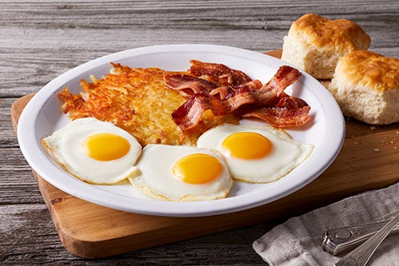 | 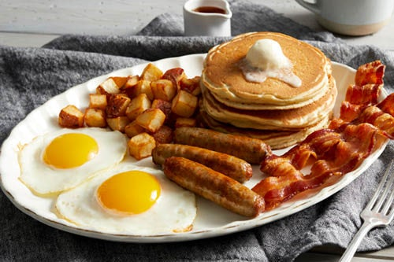 | 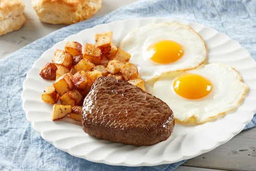 | 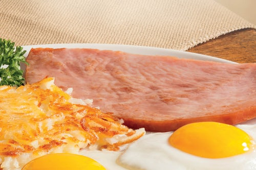 |
| The Big Egg Breakfast: 3 fresh-cracked eggs with hash browns and a choice crispy bacon and biscuit | Double Meat Farmer: Pancakes with fresh-cracked eggs, suasages, bacon, and your choice of fruit, hash browns or french fries | Sirloin Steak: Cooked-to-order, and served with two freshed cut eggs, with your choice of hashbrowns, home fries, or freshly baked biscuits | Hickory Smoked Ham: Thickly sliced premium, sugar-cured meat |
| 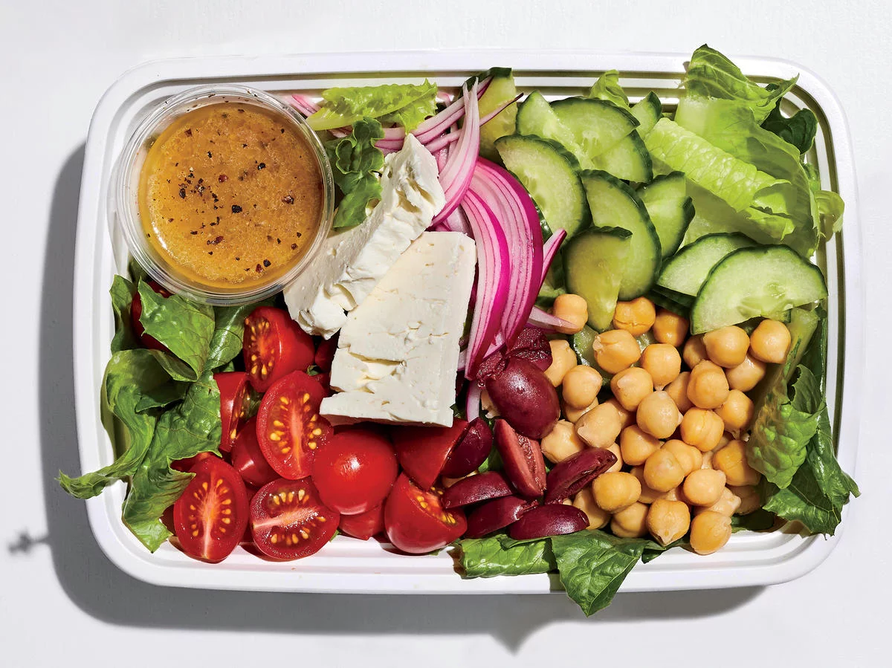 | 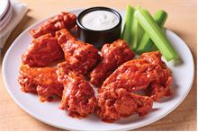 | 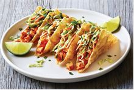 | 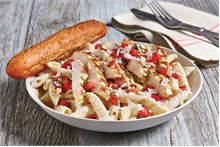 |
| Greek Pea Salad: Crunchy, sturdy romaine lettuce holds up well as the base for this salad | Double Crunch Bone-In Wings: Twice battered and fried, these crisp outside, tender inside wings are tossed in a choice of:Classic Hot Buffalo sauce Honey BBQ sauce | Grilled Chicken Wonton Tacos: Tangy grilled chicken, sweet Asian chile sauce and dumpling sauce stuffed into crispy wonton shells and topped with a crunchy slaw and cilantro mix. | Three Cheese Chicken Penne: Asiago, Parmesan and white Cheddar are mixed with penne in a rich Parmesan cream sauce then topped with grilled chicken breast and bruschetta tomatoes |
| 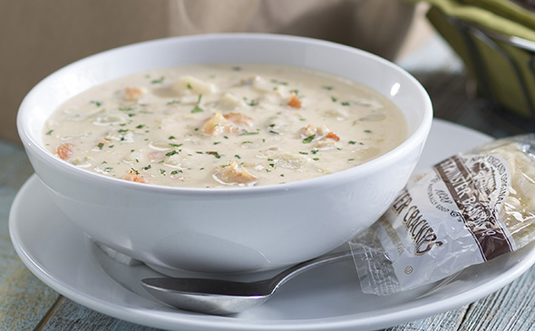 | 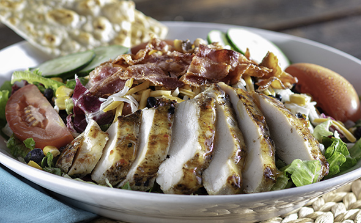 | 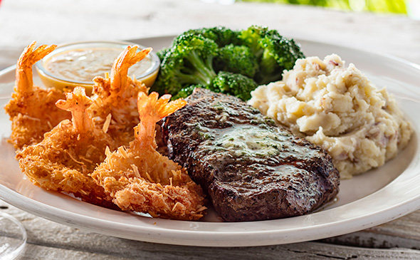 | 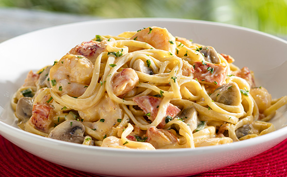 |
| Bahamian Seafood Chowder: Classic creamy chowder with shellfish and vegetable | Grilled Chicken & Bacon Salad: Sliced grilled chicken, corn and black bean salsa, tomato and cucumber. Topped with bacon, shredded cheese and drizzled with Island vinaigrette | Top Sirloin & Coconut Shrimp: Our top sirloin paired with coconut shrimp, mashed potatoes and broccoli. | Lobster & Shrimp Linguine: Shrimp and lobster tossed with mushrooms in a lobster cream sauce. |